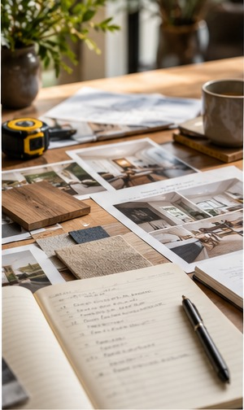

Planning / Renovation Journal
How to Build a Renovation Wish List
Translate inspiration images into a clear hierarchy of needs.
Retrospective topic: March 2026 · Oakwaters Journal

A successful how to build a renovation wish list project begins with decisions that affect how the home works, not just how it looks. For homeowners in Ontario, the best results come from checking existing conditions, coordinating the relevant trades and making selections before work reaches the point where changes become expensive.
Separate needs from preferences
Start with problems: poor circulation, inadequate storage, moisture, noise or accessibility. Then list desirable finishes and features. A useful wish list explains the outcome rather than naming a product.
Before requesting prices, ask the contractor to explain how this part of the work will be assessed and what assumptions the estimate makes. Request photographs or a sketch when an important condition will be hidden after installation. A clear record helps distinguish an agreed scope from an unforeseen condition.
Document the existing house
Photograph trouble spots and measure key furniture and appliances. Note what already works well. This prevents a renovation from removing valuable features while chasing a new look.
Compare at least two realistic approaches using the same criteria: installation requirements, durability, maintenance and impact on adjacent work. A lower material price may not mean a lower installed cost. Ask which decisions must be finalized before products can be ordered.
Rank priorities with the household
Ask each person for their top three goals, then reconcile conflicts. Label items essential, important or optional. A shared ranking makes budget decisions easier later.
Walk through the proposed layout at full scale if possible. Tape dimensions on the floor or wall, check the position of existing services and test everyday movement. This simple exercise often reveals conflicts that are difficult to notice in a small drawing.
Connect priorities to cost drivers
Moving plumbing, changing structure and expanding the building envelope can affect cost more than changing finishes. Ask a designer or contractor which ideas have major dependencies. Keep a contingency for unknown conditions.
Confirm the sequence with the people doing the work. One trade may need to complete concealed preparation before another can install visible finishes. Record who supplies each item and who checks dimensions, because missing handoffs can cause delays and rework.
Turn the list into a brief
Write a one-page scope with goals, budget range, timing and constraints. Bring it to initial consultations. Revisit the list when selections threaten to displace the original priorities.
At the final walkthrough, compare the completed work with the approved scope and product specifications. Ask for operating instructions, maintenance guidance and warranty documents where applicable. Photograph finished details and retain invoices and approvals for future reference.
Questions to ask before work begins
- Which existing conditions must be inspected before we commit to the how to build a renovation wish list scope?
- Which selections and dimensions must be confirmed before ordering?
- What work is excluded from the estimate, and how will changes be approved?
- Are any municipal permits, inspections or licensed trades required for this specific scope?
- How will completed work be inspected and documented?
A clear written scope, realistic sequencing and decisions made early are more valuable than rushing into demolition. If you are considering a renovation in the Guelph area, Oakwaters Construction can discuss the practical next steps for your home.
Planning a renovation?
Explore what is possible for your home with Oakwaters Construction.
Discuss Your Project →